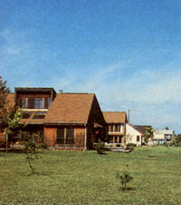
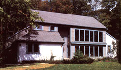
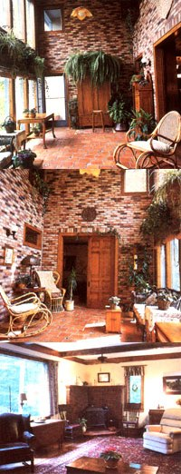

Issue # 92 - March/April 1985
Architect Joseph Kawecki and the Pipics demonstrate an emerging concept in passive solar design:
The Pipics' home is one of the newer
entries in Genesis and incorporates a sunspace
that can, in thermal effect, be detached from the
living are.
To name just a few of the discoveries made in the last decade, thermal mass has now become an accepted feature in most designs (not just in homes built from adobe, as used to be the case) . . . superinsulation has gradually been mixed with solar features . . . and designers have recognized that varying the amount of insulation isn't the only response needed in order to adapt to different climates. As a result of these, and other, lessons, many of the new breed of solar homes don't look as ostentatiously glass-covered as their ancestors, but they perform well and are far more comfortable to live in.
Tom and Crystal Pipic's house, in the Genesis Solar Subdivision near Columbus, Ohio, is a fine example of this refinement in thought on passive solar design. It demonstrates the principles that architect Joseph Kawecki has arrived at after years of doing solar design to suit the exceedingly complex climate of the Midwest.
The interior of the sunspace. The
veneer brickwork keeps thermal mass
to a minimum. A Vermont Castings
Vigilant provides backup heat.
To give you an idea of the adversity that solar buildings in Ohio must face, consider the following: The January heating degreedays in Columbus have a 66% chance of falling between 1,000 and 1,400; January typically offers between 2 and 6 clear days, but they're most likely to come in one string; and actual clear day radiation values typically vary 10 to 15% from the predicted averages. Thus the heating load on a house in the Columbus area is very likely to vary by at least 40% over several decades, and the direct solar gain that will be available to meet that demand can be counted on to be small and fickle. These sorts of conditions are enough to leave a designer mumbling, "How much glass? How much mass?"
The obvious response to an unpredictable climate is to stress insulation in preference to solar features. But does that mean solar technologies should be abandoned in the Midwest? Not at all. Kawecki's design still achieves approximately a 40% solar contribution to space heating. Let's look at how.
First, the Pipics' house can definitely be called superinsulated. The walls are built from 2 X 6's (16" on center with 5/8" drywall for solid walls) and are filled with fiberglass and sheathed with 1 " foil-faced polyurethane on the outside-for an R-value of about 30. The ceiling has 15 to 16 inches of blown-in cellulose, giving it an R-value of roughly 50. The perimeter of the crawl space is insulat ed on the inside of the block footings with 1" foam, a vapor barrier, and foil-faced 6" fiberglass that laps a foot onto the floor. To reduce infiltration, electrical receptacles in the exterior walls were kept to a minimum, and no recessed lighting was used in the second floor ceiling.
Second, solar gain comes primarily from a sunspace, which functions as a large passive collector. The sun-room has little mass of its own (the brickwork on the walls is a veneer), an approach that until recently would have been considered quite odd. Here's why it was done: Using a mass (sometimes called Trombe) wall at the back of a sunspace to transfer heat to living areas doesn't work well in places where much of the wintertime solar radiation is diffuse. Mass walls require the intensity of direct radiation to drive heat through several inches of masonry on a daily basis. What's more, if the sunspace has a large amount of mass not linked with the living area, it would likely use most of the energy available on a cloudy day just to heat its own mass. (Problems with condensation during the humid Ohio summer also argue against extensive use of thermal mass.)
The best use of a sunspace in the Ohio climate seems to be to allow its temperature to float up during the day and down at night. The Pipics installed ample doors and windows on the ground floor, as well as a number of windows on the second story, to allow convection between the sunspace and the house. At night, or when the sunspace would overheat the house, the doors and windows can be closed. The high degree of control over gain and loss offered by this approach is a distinct advantage, in this climate, over directgain features that are largely at the mercy of the weather.
Kawecki's design also incorporates a hybrid feature in the sunspace: A blower can draw hot air from the sunspace peak and force it into the crawl space, which serves as a plenum for the home's auxiliary heating system. Thus warmth can be actively distributed to remote parts of the house, and some heat is no doubt stored in a 6" layer of gravel on the crawl space floor. A thermostat switches the blower on when the temperature in the sunspace peak surges on sunny days.
The Pipics happened on Joseph Kawecki in the process of looking for property to build on. They were smitten by a five-acre plot that turned out to be a part of Kawecki's Genesis Solar Subdivision, and they ended up building a solar house largely at his urging. (Make no mistake: After remodeling a turn-of-the-century house in which the fuel bills were higher than the mortgage, Tom and Crystal were definitely in the market for energy efficiency. But they were more interested in superinsulation than solar design before meeting the architect.)
The plan was developed in the spring of 1981, and Kawecki's construction firm, Solartherm Builders, got to work in June of that year. (Though a Kawecki design is a requirement for building in Genesis, the owners have their choice of builders. Tom and Crystal picked Joseph's firm and are convinced that the experience of the Solartherm craftsmen in solar techniques - along with the architect's watchful eye - had a lot to do with the quality of the finished product.)
As the Solartherm craftsmen worked on the structure, the Pipics collected recycled materials for the project. They bought timbers, which ended up being used in their living room, from a 150-year-old barn that was being disassembled (at a cost of one-third of new); bought and restored a half-dozen 8'-high ornate oak doors (part of the reason for the 9' ceiling on the first floor); and repaired and refinished the windows that were eventually used for air circulation between the sunspace and living area on the first and second floors.
Solartherm completed the 2,150-square-foot basic structure in about eight months, and Tom and Crystal (with their third child, Josh, well on the way) did much of the finish work in the fall. Many hours went into the hardwood floors, tile, brickwork and stonework, landscaping, and a deck in back before the family moved in in February of 1982. Then, over the next year, Tom finished a 400-square-foot, fully insulated shop, office, and storage area on the west end of their home.
For the first two winters, the Pipics were able to use wood that had been cut to make room for the house as their sole source of backup heat. This winter, however, they'll have to bring in a little extra to supplement the deadfall from the wooded four acres beh ind their home. They've found that a single fire in their Vermont Vigilant in the evening will keep the home comfortable through the night; the sun takes over in the morning. Gain from the sunspace can handle daytime heating on about 75% of the winter days, whether it's clear or cloudy. All told, they burn 2 to 2-1/2 cords per winter and have yet to turn on their heat pump.
Tom and Crystal are sure they could cut their need for auxiliary heat if they were fastidious enough to use night insulation on the double-glazed patio windows in the sunspace. (They also regret building before the new efficient glazing systems were introduced.) In fact, though they closed of the sunspace from the rest of the house during the first few months after they moved in, they've since discovered that the woodstove will easily heat the sunspace and house at night. Now, instead of closing the doors and windows at night, they keep them open and maintain tropical plants in the sunspace year-round. This may mean that more wood is burned than is absolutely necessary, but-in any event-the family enjoys the closeness and comfort of gathering in the evening around the radiant warmth of their woodstove.
Joseph Kawecki's calculated and cautious design has given the Pipics a new home that uses very little energy-while maintaining stable indoor temperature and humidity in winter and summer-against the odds of an unpredictable climate. It's not an all-out solar scheme . . . but it probably foretells a powerful trend in design for the Midwest.
|
 The Pipics' home is one of the newer entries in Genesis and incorporates a sunspace that can, in thermal effect, be detached from the living are. |
 ABOVE: The Genesis Solar Subdivision is a planned community of passive solar homes. |
 The interior of the sunspace. The veneer brickwork keeps thermal mass to a minimum. A Vermont Castings Vigilant provides backup heat. |